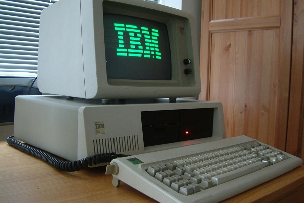

Modulo 1
Generalidades de la computación
Generalidades del curso
14-05-2022
DISTRIBUCIÓN DE PUNTEO DEL CURSO
| Primer Parcial | 20pts | |
| Segundo Parcial | 25pts | |
| Total Examenes Parciales | 45pts | |
| Tareas, Labs. Y otros | 10pts | (Promedio) |
| Proyectos Parciales | 10pts | Proyectos Parciales |
| Total De zona | 65pts | |
| Examen Final | 35pts | (Final + Proy 15 pts), Recuperación. |
| Total Del Curso | 100pts |

ACERCA DE LOS VIERNES
Los viernes son alternos, por lo que se recibira un viernes si y uno no. Tal y como se muestra en la siguiente imagen.Ademas hay algunas fechas que debemos de recordar ya que son importantes para el desarrollo del curso. A continuación se plantean algunas de las fechas importantes.
- Inicio de clases 17 de enero
- Primeros parciales del 28 febrero al 07 de marzo
- Extraordinario primer parcial – lunes 14 de marzo
- Segundos parciales del 18 al 25 de abril
- Extraordinarios Segundo – martes 03 de mayo
- Finales del 06 al 17 de junio
- Último día de clases 03 de junio
- Recuperación – del 20 al 27 de junio
ACERCA DE LOS PROYECTOS PARCIALES Y FINAL
Se tienen programados 3 proyectos parciales y un proyecto final con las siguientes fechas:| Primer proyecto parcial | 31/01/2022 |
| Segundo proyecto parcial | 14/02/2022 |
| Tercer proyecto parcial | 14/03/2022 |
| Cuarto Proyecto Parcial | 11/04/2022 |
| Proyecto Final | 15/05/2022 |
TECNOLOGÍAS A UTILIZAR EN EL CURSO
En el transcurso del curso se utilizaran los siguientes programas para el desarrollo de las actividades.
- Ecosistema completo de Google
- Canvas LMS
- Office 365
- Google Docs
- Visual Studio 2019-2022
- Visual Studio Code
- Libros de la biblioteca E-Libro
- Xampp
- Workbench
- SO Linux
- Packet Tracer
- Notepad ++
- SO Windows
ACERCA DE LAS INVESTIGACIONES
Investigación Formal
Toda investigación será contenido para examen y debe tener los siguientes puntos(mínimos):
- Carátula
- índice
- Objetivos
- Introducción
- Contenido
- Conclusiones
- Bibliografía, e-grafía
Investigación Informal
Las investigaciones informales, constarán de caratula y contenido, mismo que debe de estar referenciado en un apartado de conclusiones.
TEMAS DEL CURSO
Los temas a desarrollar en el el curso se muestran en la siguiente tablaHistoria y Evolución de la computación
14-05-2022
HISTORIA DE LA COMPUTACION DEFINICIONES
Informática:
(Según la Real Academia Española de la Lengua) Es el conjunto de conocimientos científicos y técnicos para hacer posible el tratamiento automático de la información por medio de computadoras electrónicas.Computadora u Ordenador:
Es una máquina electrónica capaz de aceptar unos datos de entrada, efectuar con ellos una operaciones aritméticas y lógicas, y proporcionar la información resultante a través de un medio de salida.Calculadora:
(acepción actual) Es una máquina capaz de efectuar operaciones aritméticas bajo el control directo del usuario.Datos:
Son conjuntos de símbolos utilizados para expresar o representar un valor numérico, un hecho, un objeto o una idea, codificada en la forma adecuada para ser objeto de tratamiento por medio de una computadora.Información:
Datos tratados y organizados, con significado desde el punto de vista del usuario.INFORMACION UTIL = DATOS + INTERPRETACION
EVOLUCION DE LOS SISTEMAS DE CALCULO
Se le presenta una lista de las calculadoras en orden de creación.- Ábaco
- Serie de alambres paralelos, sujetos por los extremos en un armazón rectangular, sobre los que se pueden desplazar una serie de bolas o fichas.
- Calculadora Mecanica 1
- La Calculadora de Sckickard
- En 1623 Wilhelm Sckickard construye la primera máquina de calcular.
- La Pascalina
- 1.642 Blaise Pascal. Conjunto de discos dentados, cada uno de los cuales tiene 10 divisiones, que representaban un dígito. Es capaz de realizar sumas y restas.
- La Calculadora Universal
- 1694 Gottfried W. Leibniz. Perfecciona la máquina de Pascal añadiéndole la multiplicación y división.
- La Lógica Matemática
- George Boole (1815-1864), es el fundador de la teoría de la lógica matemática.
- La Calculadora de Sckickard
- Calculadora Mecanica 2
- El Padre de la Computadora
- Se considera a Charles Babbage (1791- 1871), como el padre de los sistemas actuales de computación.
- La Máquina Diferencial:
- (1821) capaz de calcular polinomios de sexto grado y tabular mecánicamente hasta veinte cifras y ocho decimales
- La Máquina Analítica:
- (1833) sistema mecánico precursor de la computadora del siglo XX. Disponía de: Dispositivo de entrada/salida de datos (tarjetas perforadas) ,Unidad de memoria ,Dispositivo de cálculo llamado "Mill" (Unidad Aritmética) ,Mecanismo de barras y palancas que accionaba el conjunto (Unidad de Control), conducido por un programa codificado sobre tarjetas perforadas.
- La Máquina de Tabular
- En 1890 Herman Hollerith (1860-1929), inventó su máquina tabuladora que utilizaba corriente eléctrica para detectar los agujeros que estaban perforados y así hizo registrar la información en tarjetas, y el tiempo total del proceso se redujo. Sistema de automatización del censo.
- El Padre de la Computadora
LAS PRIMERAS COMPUTADORAS
La computadora electronica Mark 1Konrad Zuse en Berlín desarrolló su computadora Z-1 Mark I Computer (ASCC) Automatic Sequence Controller Calculator (1944) Desde 1937 hasta 1944, IBM patrocinó el proyecto del Dr. Howard H. Aiken, profesor de la universidad de Harvard. En 1944 finalizó su objetivo con el nombre de Mark I
La computadora electronica ABC
(Atanasoff Berry Computer) (1936-37) John Vicent Atanasoff y Clifford Berry. Principios de las primeras computadoras.
La computadora electronica ENIAC
(Electronic Numerical Integrator and Computer) (1946) Construido en la universidad de Pennsylvania, por John W. Mauchly y John Presper Eckert
Calculadoras de Von Neuman
1.946 "First Draft of a Report on to Edvac“ Principios ordenadores del tipo Von Neumann:
- Concepto de numeración codificada
- Almacenamiento del programa en memoria
- Perfeccionamiento de la ruptura de secuencia
UNIVAC(1.951) Eckert y Mauchly, primera computadora adquirida con fines lucrativos.
Generaciones de computadoras
- Primera Generación (1940-52)
- Se emplean las Valvulas de vacio
- Son de uso cientifico y militar
- El metodo de programación consistia en en modificar los valores de los circuitos de la maquina. debido a la carencia de lenguajes de programación
- Ordenadores a precios Elevados, debido a la baja vida promedio de los componentes y alto consumo electrico
- Los Ordenadores eran muy lentos y con almacenamiento muy limitado
- Incapacidad de ejecutar más de una tarea a la vez
- Segunda Generación
- Se emplea los transistores como base
- Disponia de programación previa de un sistema operativo capaz de interpretar lenguajes de programación como COBOL o FORTRAN
- Se inicia el desarrollo de perifericos E/S y lenguajes de tipo ensamblador
- Generalmente se se trabajaba por lotes
- Aumento de la velocidad en el calculo
- Reducción de tamaño
- Reducción del consumo de energia y potencia disparada
- Tiempo de vida media del transistor superior a la válvula
- Reducción de precios
- Tercera Generación
- Se emplea el circuito Integrado, haciendo uso de materiales semiconductores en lugar de nucleos de ferrita en la construcción de memorias
- Se mejoran los lenguajes de programación y empezaron a aparecer programas comerciales, con lo que un usuario no tenia que programar sus aplicaciones
- Capacidades de multiprogramación, con lo cual los ordenadores son capaces de ejecutar, varias tareas al mismo tiempo
- Aumento de velocidad de calculo
- Se redujo el tamaño

- Cuarta Generación
- Se emplearon los circuitos de alta escala de integración
- Formo parte una sucesion de avances de para el hardware y software, junto con las posibilidades de aplicación
- Nuevas tecnologías de fabricación de semiconductores que conducen a velocidades mayores de transmision cada vez mayores y con mayora capacidad de almacenamiento
- Aparición de paquetes de software, que obedecen a nuevas concepciones y situaciones mas especificas.
- Nuevas tecnologias de memorias de almacenamiento, tipo winchester, y burbujas magneticas
- Aparición de ordenadores personales
- Más lenguajes de alto nivel y herramientas informaticas
- Desarrollo de perifericos inteligentes, descargan el trabajo de la CPU
- A mediados de los 80s, se inicia el desarrollo de redes de computadoras personales que corren sistemas operativos en red y sistemas operativos distribuidos

- Quinta Generación
- Arquitectura es diferente a la propuesta por Von Neumann
- Ordenadores inferentes
- Ordenadores de transputers
- Ordenadores óptico
- Máquinas neuronales
- Sistemas informáticos distribuidos

- Generaciones de ordenadores personales
- Años 70, primer microprocesador, el INTEL 4004, posibilidad de construcción de un ordenador utilizable por un solo Usuario
- 1977, S.Wozniaky S.Jobs fundaron la empresa llamada Apple
- 1981, IBM PC (Personal computer)
- Evolución tanto en el microprocesador utilizado(8088,8086,80286,80386,80486,Pentium) y en el sistema operativo (UNIX para el PC, el OS/2 de IBM y el Windows NT, Win 95, Win 98 de microsoft)
- Mediados de los 80s, comienza el desarrollo de redes de computadores personales
- Sexta Generación
- Se caracteriza por la evolución de las comunicaciones a la par de la tecnología.
- La miniaturización de componentes en las máquinas, y su reducción en costo conllevan a sistemas de alta capacidad. Cuentan con arquitecturas combinadas Paralelo / Vectorial, con cientos de microprocesadores vectoriales trabajando al mismo tiempo;
- se han creado computadoras capaces de realizar más de un millón de millones de operaciones aritméticas de punto flotante por segundo (teraflops).El uso de redes se hace común, con grandes velocidades y la integración de servicios de video de calidad, voz y otros datos multimedia en tiempo real.

Clasificacion de computadoras
principalmente se clasifican por:- Su clase
- Analogica
- ordenador analógico a un tipo de ordenador que utiliza dispositivos electrónicos o mecánicos para modelar el problema que se resuelve, utilizando un tipo de representación de cantidad física para expresar los valores que conforman el resultado.
- Digitales
- Es un tipo de computador que trabaja con dígitos (de ahí su nombre), que posee una gran memoria de almacenaje para guardar datos que han sido introducidos por operadores y que son traducidos a un código para aumentar la velocidad de su manipulación.
- Hibridas
- Una computadora híbrida u ordenador híbrido es un aparato que exhibe una mezcolanza de características de computadora analógica y computadora digital. El componente digital normalmente sirve como el controlador y proporciona operaciones lógicas, mientras que el componente análogo sirve normalmente como solucionador de ecuaciones diferenciales.
- Analogica
- Su proposito
- General
- Especial
- Su forma de Operar
- MonoUsuario
- Microcomputadora
- un microcomputador o un microordenador es una computadora pequeña, con un microprocesador como su unidad central de procesamiento CPU. Generalmente, el microprocesador incluye los circuitos de almacenamiento (o memoria caché) y entrada/salida en el mismo circuito integrado (o chip).
- Microcomputadora
- Multiusuario
- Minicomputadora
- las minicomputadoras se diseñan para ser mas pequeñas que las macrocomputadoras, pero con sus mismas funciones a menor escala.
- Macrocomputadora
- es un ordenador de grandes dimensiones capaz de gestionar un elevado número de tareas simultáneamente. Este cuenta con varias unidades de almacenamiento destinadas a grandes cantidades de información que luego serán procesadas. Otra de sus principales características es que permite el acceso a varios usuarios simultáneamente por medio de terminales.
- Supercomputadora
- upercomputadora es aquel tipo de ordenador que presenta capacidades de cálculo muy por encima de la media. De hecho, la velocidad de estas máquinas se mide en petaflops o mil billones de operaciones por segundo
- Minicomputadora
- MonoUsuario
Lista de actividades
|

© 2022 Grupo5
© Derechos reservados